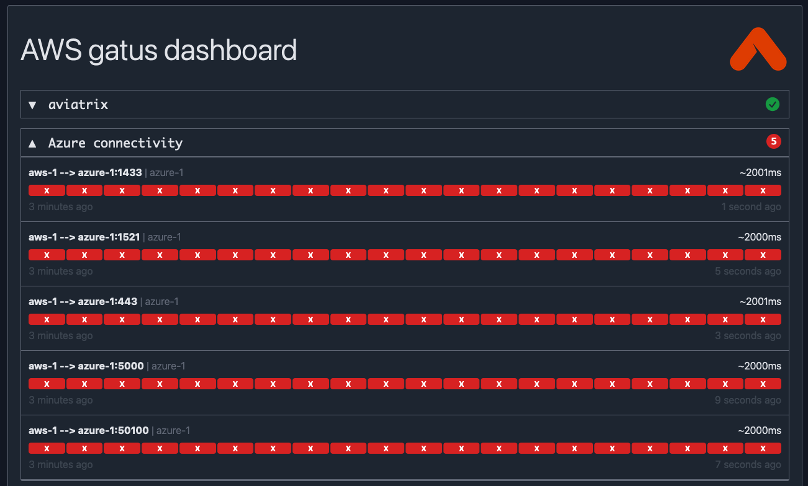
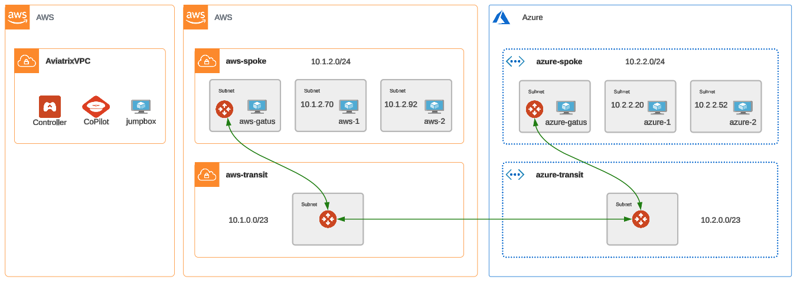
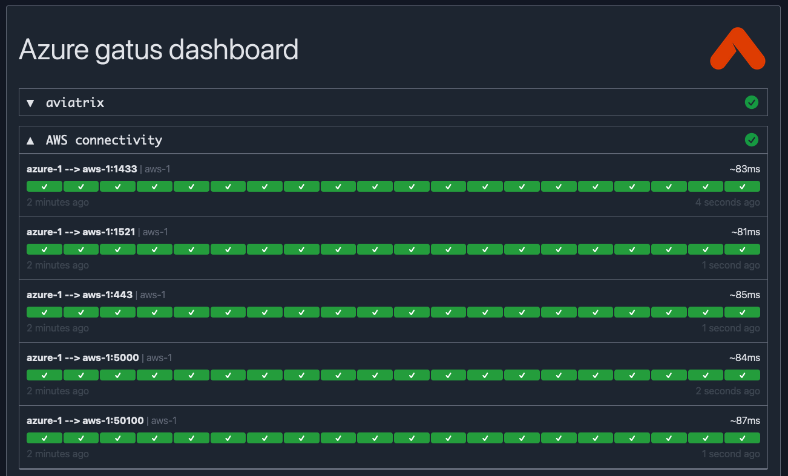

Multicloud Network Architecture (MCNA)#
Important
Estimated time to complete: 30 minutes
In this lab, the goal is to bridge two unconnected networks in two separate clouds by implementing a multicloud network architecture (MCNA) using the Aviatrix platform. This will be done solely with the Aviatrix terraform provider.
The following infrastructure will be deployed:
A transit VPC in AWS
A transit VNet in Azure
An Aviatrix transit gateway in the transit vpc in AWS
An Aviatrix transit gateway in the transit vnet in Azure
An Aviatrix spoke gateway in the brownfield spoke vpc in AWS
An Aviatrix spoke gateway in the brownfield spoke vnet in Azure
Spoke GW attachments to the respective transit GW in each cloud
A transit-to-transit peering between transit gateways.
In addition to the explicit infrastructure deployed via Terraform, the Aviatrix platform will also handle programming routes into the respective cloud route tables to achieve end-to-end connectivity from spoke VPCs across the deployed Aviatrix transit backbone.
Initial Connectivity#
A reminder of the initial topology of the lab environment:

Also note, the Azure and AWS connectivity sections in your gatus dashboards are red.

Configure and apply#
There is no code to configure for this lab. If you look at your terraform.tfvars file, the deploy_mcna variable is already set to true
From your jumpbox or local workstation, navigate to the ace-automation-ilt code folder in the LXTerminal using the shortcut on the desktop (or shell of your choice or your workstation). On the jumpbox the code is one folder deep.
cd ace-automation-ilt
Then, initialize terraform.
terraform init
Finally, apply.
terraform apply --auto-approve
Expected Results#
In under 10 minutes all the gateways will be deployed and connectivity established. The topology now looks like this:

Looking at the CoPilot Topology view also shows the networks now connected.

Take a look at your gatus dashboards. Did you expect them to change? The inter-cloud connectivity has now moved from red to green. Instances in AWS can now communicate with Azure and vice versa.

Code#
Let’s take a look at the code behind the apply. Looking at the root main.tf you can see that the mcna module was executed because deploy_mcna was set to true.
module "mcna" {
count = var.deploy_mcna ? 1 : 0
source = "./mcna"
backbone = local.backbone
apply_custom_spoke_routing = var.apply_custom_spoke_routing
}
Feeding that module, is a local variable that makes up the definition for the transit and spoke vnets/vpcs and their connectivity.
locals {
backbone = {
aws = {
transit_name = "transit-aws"
transit_account = "aws-account"
transit_cloud = "aws"
transit_instance_size = "c5n.xlarge"
transit_cidr = "10.1.0.0/23"
transit_region_name = "us-east-1"
transit_asn = 65101
firenet = var.enable_firenet
firenet_firewall_image = "Palo Alto Networks VM-Series Next-Generation Firewall (BYOL)"
firenet_bootstrap_bucket_name_1 = "${var.pod_number}.bootstrap.aviatrixlab.com"
firenet_iam_role_1 = "aviatrix-bootstrap-VM-S3-role"
firenet_inspection_enabled = true
firenet_keep_alive_via_lan_interface_enabled = true
},
azure = {
transit_name = "transit-azure"
transit_account = "azure-account"
transit_cloud = "azure"
transit_cidr = "10.2.0.0/23"
transit_region_name = "West US"
transit_asn = 65102
transit_az_support = false
},
}
}
The local mcna module itself consisted of 2 aviatrix modules:
backbone: itself a collection of mc-transit, mc-firenet, and mc-transit-peering modules
This collection of Aviatrix-supported modules make it very easy to deploy and connect networks across all major cloud providers.
Next, we’ll demonstrate inserting a 3rd-party firewall into the east-west data path. Use the navigation below when you’re ready to move onto the next section.